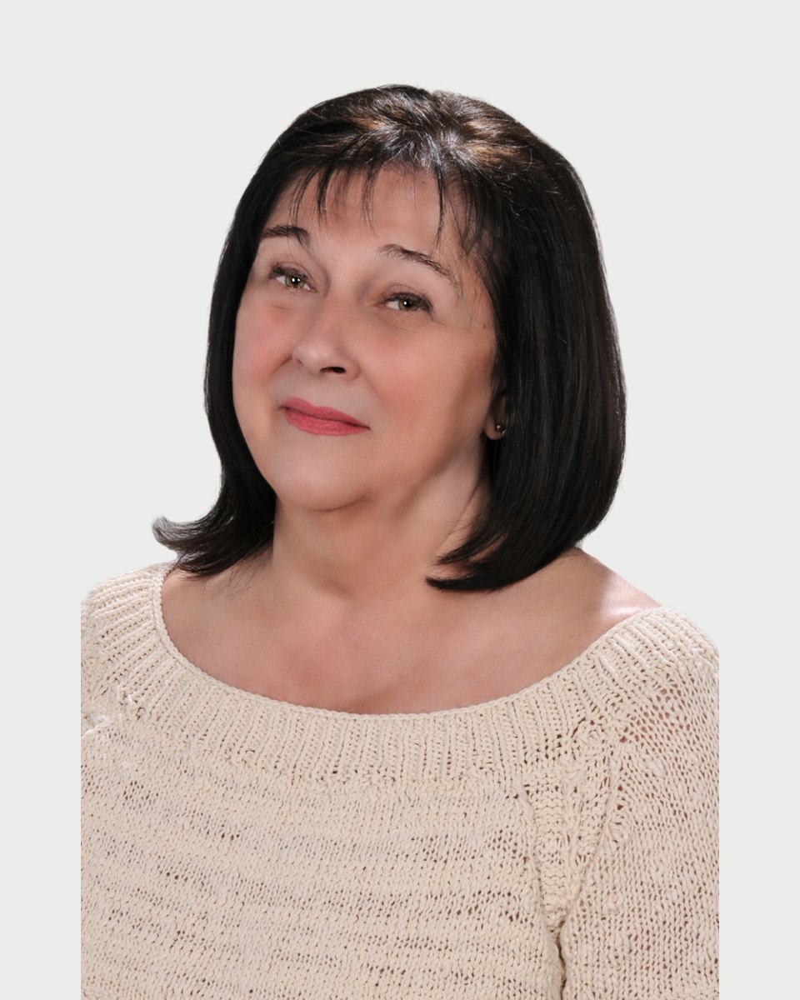

Regiszter 21 · Klinikai szakpszichológus
Laki
Éva

Amiben segítek
- Krízis helyzetek
- Életviteli elakadások
- Szorongások
- Depressziós epizódok
- Nevelési tanácsok szülőknek
- Posttraumás stressz
- Burnout szindróma
- Mindennapi stressz
Rólam
Mindenki fontos és mindenki számít! Amikor együtt dolgozom egy klienssel, számomra a legfontosabb dolog, hogy segítsek neki. Ehhez elengedhetetlen a teljes odafigyelés, megértés és elfogadás.
Kedves Látogató! Szeretettel üdvözlöm!
Laki Éva vagyok, felnőtt klinikai szakpszichológus, life coach. Tanulmányaimat az Eötvös Lóránt Tudományegyetemen végeztem, klinikai szakpszichológusi vizsgát 1989-ben tettem.
A szakma több területén volt módom próbára tenni magam, így széleskörű tapasztalattal rendelkezem. Szemléletmódomat igyekszem minden esetben az adott problémához igazítani annak érdekében, hogy minél hamarabb és minél maradandóbb eredményt tudjunk elérni a közös munkánk során.
Tiszteletben tartom azt a szenvedésérzést, ami arra készteti a pácienseinket, hogy segítséget kérjenek, és a segítségnyújtás mihamarabb meg is történjen.
Laki Éva díja 18-25 ezer forint alkalmanként.
Képzés és szakmai út
A képzések és a szupervízió az akkreditált szakképzőhely rendjében folynak. Mit jelent ez Önnek
Iskolai végzettség
Szakmai tapasztalat
Pszichiátriai osztály
Börtön
Nevelési Tanácsadó
Speciális Nevelőotthon
Szociális otthon
Kommunikáció oktatás középiskolában
Kiégési tréningegészségügyi dolgozók részére
Járóbeteg szakellátás
Tanítómesterek
Akiknél a módszereket tanulta
- Dr. Szakács Ferenc
- Dr. Bokor László
- Dr. Flaskay Gábor
- Mészáros Judit
- Dr. Tringer László
Időpont Laki Évanál
Az ügyfélszolgálat hétköznap 9 és 15 óra között egyeztet. Ha bizonytalan, hogy Ön kihez tartozik, azt is megbeszéljük.
Hasonló területen dolgoznak
Három kolléga, akinek a szakterülete a legközelebb áll Laki Éva munkájához.